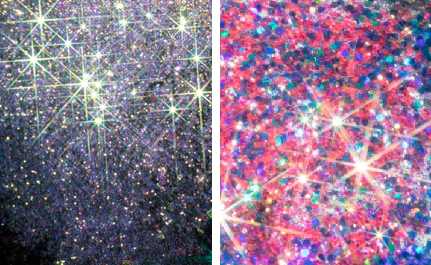

11.13 周五｜亮片炸弹、酷儿反抗、感受彩虹 - 「可盐可甜」@loopy
PS: 本文中所有出现的闪光材料、闪烁、闪粉、亮片
都是 “Glitter” 适应语境下的翻译
对于向往任何形式的超验体验的人来说，在黑暗中闪闪发亮的东西总能唤起一阵强烈的共鸣。Roland Barthes 在《The Neutral》中写道：“闪光物体的形态是细微的、状态多样的、极具变化的”。尽管它们闪亮的形式可能会在不同的时间和空间上发生变化，但永不停止闪光是一件非常重要的事。
从想象静态的闪光材料开始：人们在坑口拣选散落的云母，将其从脉石上敲碎，筛尽杂质，研磨成粉或保留片状，用于装饰旧石器时代的洞穴画，以及神庙的墙面。

闪光自此成为一种宗教象征、一种反抗和庆祝并行的标志，是华丽摇滚乐手 / 乐迷、俱乐部小孩....在各种意义上的黑暗中探索微光并拥抱自己真实色彩的一种方式。
David Bowie、Gary Glitter 、Iggy Pop 等 Glam rock 乐手突破了嬉皮时代 Save The World的宏伟氛围，他们总是赞美简单甚至肤浅的事物，把雌雄同体的性别气质变得很酷。《Rolling Stone》的作者 David Fricke 将 Glam rock 描述为“流行的吉他、狂暴的青春期和优雅的无政府主义”——那些男歌手们肆无忌惮地在脸上倾洒闪粉、画眼线，涂口红，穿前卫的衣服和厚底鞋。

《天鹅绒金矿》剧照
《天鹅绒金矿》的制片人 Todd Haynes 在采访中表示，Glam rock 时代的音乐和影像对他的青春期有着无比深刻的影响：“那是一个大家认为双性恋气质很酷的时代。”影片的编辑 Jim Lyons 说：“我们对那个时期的怀念显而易见，当时我们相信我们会有一个越来越好的社会，女权主义会获胜，同性恋会被完全接受。”
Jim Lyons 说的 “当时我们相信” 暗示了如今酷儿议题的处境，而闪光材料动态美学，不仅指亮片妆容的动态视觉效果，更为当代的酷儿反抗提供社会运动层面的张力，即「Glitter Bombing」——亮片炸弹。
在2012年美国大选前的几个月里，「亮片炸弹」则成为强调 LGBTQ 权利的一种流行方法。明尼苏达州的亮片族（The glitterati）从明尼苏达州博览会的空中游乐设施中，将一袋袋的亮片扔到了明尼苏达州保守组织的州际博览会展台上。
在《HuffPost Gay Voices》的一篇文章中，身为异性恋者的 Espinosa 解释了他选择闪粉来做行动的原因：创造一个简单的、引人注目的场景可以贴合媒体所谓24小时的新闻周期，Facebook 和 Twitter 这样的社交网络则可以让短视频进行病毒式的传播，接触到更广泛的受众。此外，闪粉价格低廉，易于获得，易于使用，易于被大众所接受。
「亮片炸弹」用欢快的形象呈现不同政见，采用了社会运动学者口中的轻佻战略（Tactical Frivolity）。这种策略能吸引公众的注意力，并更好的动员那些原本不会参与更具争议性的抗议形式的人们。组织者 Elizabeth M. Edman 在接受媒体采访时所说：“对酷儿们来说，亮片行动是一件值得严肃对待的事情。长期以来，我们一直在用 “闪烁” 的方式让人们看到我们，尽管变得引人注目也会让我们面临风险。”
Glitter Ash Wednesday 的网站标语
正如这个酷儿友好的进步基督徒网站上写的那样，"闪烁是同性恋历史中不可分割的元素"。
早期的变装皇后，如 LaVerne Cummings、Barbette 和 Gene La Marr 等都在上世纪五十年代青睐闪亮的眼影。今天，闪粉仍然是变装文化和酷儿文化的重要组成部分。当然，并不是所有的酷儿都喜欢，甚至有些反感闪粉。但它作为一种酷儿化的表达形式，能与酷儿群体的文化观念产生共鸣。闪粉的意象与舞厅、变装皇后、时尚以及抗议活动结合，以夺目的光芒创造、扩大并强调了酷儿可见性的空间。
2012年，明尼苏达州的亮片族（Glitterati）来到 Marcus Bachmann（性取向矫正治疗师，曾将男同性恋形容为野蛮人）的诊所，在 Lady Gaga 的经典曲目《Born this Way》中跳起了快闪式的舞蹈。30多名抗议者用闪粉给诊所院长 Marcus Bachmann 的肖像“洗礼”，在诊所的停车场留下了经久不散的彩虹火花。
2019年，Trump在 Target Center 内向数千名支持者发表讲话时被亮片炸弹袭击
诗人 Caconrad 曾写下这段浪漫的文字：“闪粉并非用于否认世界的痛苦，而是在帮助我们忍受那些否认我们彼此需要的暗淡结果。如果你有一个歪鼻子或者上面有伤疤，并让这事主导了你的生活重心，请你相信我，大方地接受它，并赶快抹上掺着闪粉的腮红。在你死之前，和我一起爱惜自己的肉体，珍惜我们的生活。我们试图生活在他人的评判之外，即使有时只是徒劳，但也值得一试。我并非虔诚的教徒，但我会一直追随 Ruschmann 闪光教（The Ruschmann Glitter Cult）。”
" Glitter is not enabling denial of the world's pain but instead helps us endure the bleak results of those who are in denial of how we need one another. If you have a scar or bent nose that has become the center of your life trust me when I say own it and apply glitter blush directly, immediately. Before you die join me in loving our flesh, loving our lives. Our attempts at living beyond the judgments of others do not always work, but it is worth a try. I am not much for religion, but I would follow The Ruschmann Glitter Cult. "
「可盐可甜」是面向但不专属于性少数人群的派对，旨在强调俱乐部的多元性以及酷儿社群的可见度，由loopy和杭州酷儿论坛团队共同呈现。
本周五晚，来loopy和我们一起经历一场毫无顾忌的，自带光芒的闪光派对！
✨✨✨
 |  |
https://soundcloud.com/1-1-zeitgeist/warmchainss-for-11
https://www.youtube.com/watch?v=2P6PKQiO5mc&t=1s
200229 loopy LIVE w/ Maguro
BDG // 本文作者小B和DJ 小E.
✨✨✨

关注loopy了解近期活动详情